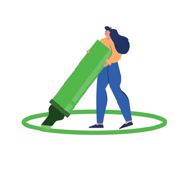

Quien acuño esta disciplina y concepto fue Edward Hall, antropólogo estadounidense quien
en 1964 se hizo famoso por sus trabajos respecto a la distancia entre las personas.

Hall argumentó que cada cultura tiene su propia forma de utilizar el espacio en sus
interacciones sociales. Por ejemplo, algunas culturas pueden preferir estar más cerca de las personas cuando
hablan, mientras que otras pueden preferir mantener más distancia.
Leer más...

Hall también señaló que la distancia entre las personas puede afectar la forma en que
se comunican. Por ejemplo, estar demasiado cerca de alguien puede hacer que se sienta incómodo y que la
comunicación sea menos efectiva.
Leer más...
Finalmente, Hall argumentó que la proxemia puede ser utilizada para transmitir
mensajes. Por ejemplo, una persona puede acercarse a alguien para indicar que está interesada en lo que está
diciendo, o puede alejarse para indicar que no está interesada.
Leer más...